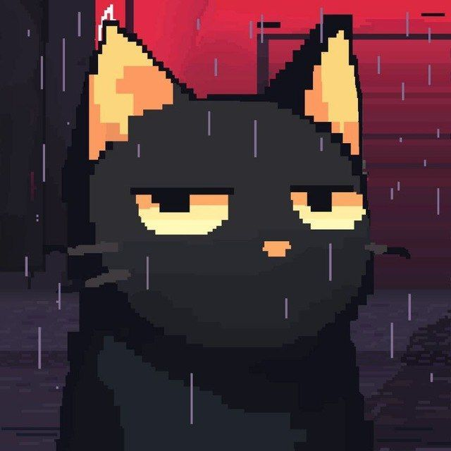

I open black boxes — neural nets, version control, whatever’s opaque.

I spent more time planning to study than actually studying. orbit started as the fix — a planner that thinks in forgetting curves, not to-do lists. that turned out to be the pattern for everything since: when something annoys me, or i can’t see how it works, i build my own until i can.
mostly that means going a layer deeper than i need to. i wrote a neural net by hand in the browser — backprop and all, no framework — just to see what model.fit() had been doing the whole time (gradient). i built a tool to watch GPT-2 think, because trusting outputs i couldn’t see the reasons for had stopped feeling okay (glassbox).
“a black box is just a system nobody’s opened yet — i’d rather open it than take its word.”
i’m a CS undergrad at PES University in bengaluru, heading into PESU’s intelligence lab to work on interpretability and why models hallucinate — the same instinct, pointed at the systems that need it most. i care more about why something fails than whether it passed, i keep things local-first when i can (your data, your GPU, no server), and the one thing i won’t ship is boring.
away from the screen i shoot 10m air rifle, competitively, at national level — mostly an exercise in breathing slow and not flinching, which turns out to be the same skill as 3 a.m. with a stack trace. i run on filter coffee and once costed out an entire noodle bar for fun.
there’s also a cat. it reviews my commits. it remains unimpressed.
Continued on the projects desk →STDERR — wandered onto the PESU campus during a 3 a.m. debugging session. stayed. currently serving as unpaid, unqualified, deeply opinionated code reviewer.
> reviews commits. remains unimpressed.
> saw your TODO list. bold of you.
> i was asleep for the tests. they still passed.
terms: one tin of food, one patch of sunlight, zero stand-up meetings. the segfaults are not my fault. that is my statement.